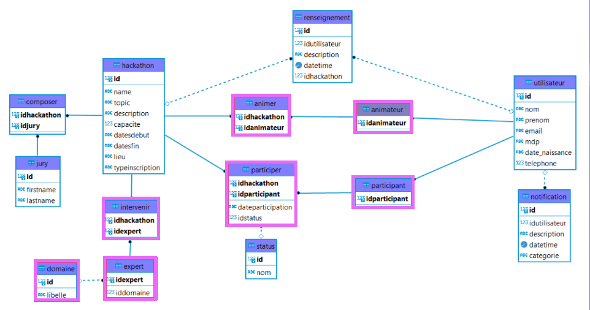
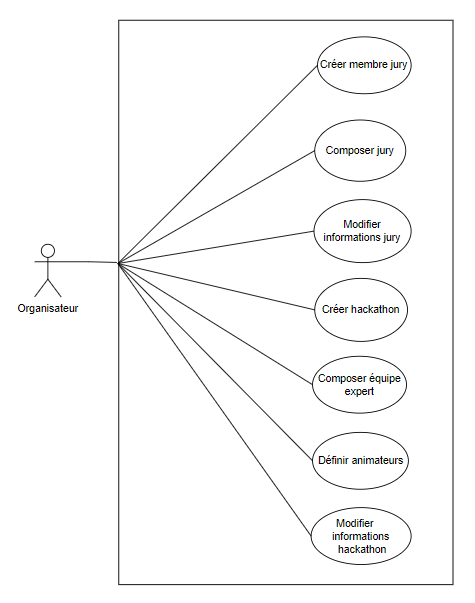

Hacka't Orga est notre seconde application ddu projet Hcackat'Innov. Elle est développée en Java
avec le modèle DAO.
La mission principale est de procéder au développement de la phase d'initialisation à un hackathon.
On y retrouve l'acteur principal : l'organisateur.
Au même titre que la première application Hackat'Web, nous disposons d'une application de départ avec un modèle fourni.
Nous utilisons également le même système de gestion de BDD PostgreSQL.
L'application Hackat’Orga doit permettre de gérer les étapes du processus visant à configurer
le hackathon : initialisation et planification à destination de l'organisateur du hackathon.
Une nouvelle fois, nous disposions de la même documentation qui nous avait servies pour l'application Hackat'Web et Hackat'Manage. Parmi les ressources, on y trouvait des détails quant à la phase de planification d'un hackathon. Voir la documentation.
Pour ce second sprint, un nouveau cahier des charges nous était attribué et contenait les nouveaux scénarios utilisateurs avec un niveau de priorité et un état. Notre objectif dans un premier temps est d'analyser le besoin imposé par le prestataire informatique à travers ces fonctionnalités. Cette étape est nécessaire pour bien cerner la demande de chaque users story.
Nous avons suivi la même progression concernant l'organisation de début de sprint : mise en place de l'environnement de développement,
création du projet sur Framagit et récupération du script Java donné par nos professeurs.
Mais cette fois-ci, nous avons pris davantage de temps en ce qui concerne l'analyse des users story. En effet, dans la
rétrospective du sprint précédent, nous avons mentionné que nous devions être plus rigoureux dans l'organisation et qu'il
était aussi important de ne pas partir directement dans le développement.
Pour cela, mon équipe et moi avons pris le temps de réfléchir à la priorisation des users story ainsi que les attributions à chaque membre.
Nous avions également un autre détail à prendre en compte : l'utilisation du modèle DAO en Java. En effet, l'architecture restait assez
nouvelle malgré le fait que nous l'ayons abordé un peu plus tôt en cours d'année.
De nouveau, nous appliquons la même habitude à chacune de nos séances à savoir : discuter entre nous des fonctionnalités en cours et
des difficultés rencontrées de la séance précédente.
Puis à chaque fin de séance, nous faisions un point sur notre avancé et prenions note des prochaines étapes pour le développement.
Enfin, nous avons passé une petite épreuve orale à la fin de ce sprint afin de faire un compte rendu autour de la gestion de projet
et la gestion d'équipe.
Voir notre diaporama
La solution est établie sur deux designs pattern : MVC et DAO.
Nous avons vu le modèle MVC dans la première application Hacka't Web. Pour rappel, c'est un modèle qui permet de séparer
la logique du code en trois parties distinctes : le Modèle pour l'accès aux données, la Vue pour l'affichage côté utilisateur et
le Controller qui permet le traitement et la redirection de route dans l'application.
Puis nous avons le modèle DAO (Data Access Object) autrement dit l'objet d'accès aux données qui s'inspire du MVC.
Ce pattern permet de séparer le modèle où sont situés les scripts SQL, de la base de données.
Ainsi, le modèle communique d'abord avec une interface DAO où sont listé un certain nombre de noms de méthodes.
Puis, ces méthodes sont implémentées par un DAO qui cette fois-ci implémente l'interface. C'est ici que le code sera écrit et
que l'échange avec la base de données se fera.
Voici une description des moyens établie concernant la sauvegarde du projet et le déroulement de sa continuité.
Au cours du projet Hacka't Innov, nous utiliserons toujours Framagit pour le versionning de chacune de nos trois applications.
Pour rappel, nous réutilisons ici la même base de données PostgreSQL. Voici un aperçu de la base de données en cours de développement après ajout de nouvelles tables. Nous avons décidé de mettre en place un héritage à partir de la classe utilisateur. Des modifications ont également été apportées à certaines tables pour correspondre aux nouveaux besoins du projet.
De la même manière que la première application Hackat'Web, nous avons utilisé le logiciel Filezilla pour le déploiement d'Hackat'Orga.
Cette fois-ci, nous avons choisi d'utiliser l'outil de suivie de projet Clickup.
Premièrement, nous avons fait ce choix car l'organisation ainsi que le suivi des tâches était plus compréhensible
et intuitive pour l'équipe.
De plus, il y a la possibilité d'ajouter des items pour chaque users story telle que
l'estimation du temps, l'ajout de commentaires ou encore les dates de début et d'échéance.
Enfin, Clickup nous offre la possibilité d'avoir un diagramme de GANTT, ce qui est très pratique pour la visualisation
du temps de développement des tâches.
Cependant, cela représentera quelques inconvénients notamment au niveau du diagramme de GANTT car la durée de réalisation des
tâches n'est pas totalement fidèle à la réalité. L'estimmation est donnée en fonction du nombre de jours et non pas en fonction
du nombre d'heures.
Une nouvelle fois, nous avons réalisé un schéma UML comme nous l'avons fait pour Hackat'Web lors du premier Sprint. Voici les fonctionnalités que peut effectuer un organisateur quant à l'étape d'inscription d'un hackathon :
Pour cette application, le visuel correspond à une interface graphique qui sera mise en place grâce au plugin JFormDesigner sous l'éditeur IntelliJ IDEA.
Pour ce second sprint, nous avions eu de nouvelles difficultés concernant l'adaptation de la base de données pour cette nouvelle application.
De plus, le design pattern n'était pas évident à prendre en main et nous étions de ce fait moins efficaces.
Au bout de ce premier Sprint, nous avons donc pu faire un point en équipe sur le déroulement. Après avoir discuté, nous avons établi
une seconde rétrospective pour laquelle nous tenterons d'en retirer les leçons et de s'améliorer lors du dernier sprint.
Cependant, nous nous sommes mieux organisé concernant l'attribution des tâches et nous avons pris davantage de temps pour
réfléchir aux impacts de la nouvelle implémentation de code.


IntelliJ
Java
DBeaver
PostgreSQL
Clickup
Framagit